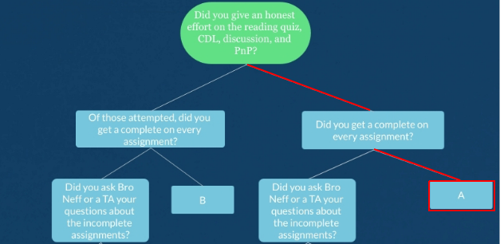

Grade Claim 3
Table of Contents
1 So what is this grade claim?
1.1 The Grade
Similar to my other claims, I will claim an A.
1.2 The Form
The form of this grade claim has two sections: an org-mode source as well as a visualization tool/builder for my WOK that I have built from the ground up with Python and PyGame (a simple library for graphics).
Of course I will also provide some evidence to my “High Particpation”, “High Problem Solving” aspect of my Grade Claim.
1.3 A little more about PyGame…
It is necessary to install PyGame to continue with the Grade Claim.
This can be done simply with ’pip install pygame’
pip install pygame
Below is some sample code using PyGame to spawn a simple black window
import pygame pygame.init() clock = pygame.time.Clock() screen = pygame.display.set_mode((800, 600)) running = True while (running): for event in pygame.event.get(): if event.type == pygame.QUIT: # If the user closed the window running = False screen.fill((255,255,255)) # Fill the screen with black clock.tick(60) # 60 FPS
2 How do I explore the WOK?
2.1 The Repo
If git is installed on your system, simply ’git clone https://github.com/Simponic/graph-explorer.git’ Then change directory to ’src’ and run ’python3 main.py’ to view my WOK
2.2 Running
For a tutorial/overview/walkthrough of the software, either read the README.md file in the repository, or watch the video I made explaining it: https://www.youtube.com/watch?v=nIgWwrd05ts
Want a random graph? Try using the randomLinks() and randomNodes() methods on an instance of a Graph!
2.3 Structure of my WOK Visualizer
Of course, I have to go into a little detail about my WOK software and its semantics.
The overall structure is quite simple. I have two Classes I created: a Node, which is the functional unit of Graph, and a Graph class which contains all of the methods for displaying and updating Nodes with relation to the whole graph.
For example, the function that draws the links between selected nodes is in the Graph class.
2.4 File structure for graphs
When the program is initalized it can read input from a file. The format of this file is just a modified adjacency list:
| SourceNode | DestinationNode | Weight | Description |
|---|---|---|---|
| log(n) | Function | 1.0 | Is a |
| AdjacencyMatrix | Matrix | 1.0 | Is a |
| AdjacencyMatrix | Graph | 1.0 | Represents a |
Where each section is seperated by spaces. My finalGraph.txt provided in the repo is a good example of a full WOK represented with this convention.
3 What paths can you provide for the Grade?
3.1 The Ultimatum Grade Path
3.2 Another Path

3.3 Yet Another Path
3.4 Another Path Yet Again
4 High Particpation
4.1 An Overview of Kritik
4.1.1 Completion of each discussion
I have engaged fully in each discussion on Kritik, with much proof. I will not include it as the only way to do so would to be to take a screenshot of every response! Instead I have just included proof from the Final Discussion.
4.1.2 Completion of each activity
Low: Mean of 82% from all peer evaluators
High: Mean of 100% from all peer evaluators
import matplotlib.pyplot as plt plt.style.use('ggplot') x = list(map(lambda x: 'Activity ' + str(x), range(1, 8))) scores = [92, 82, 100, 100, 97, 85, 94] x_pos = [i for i, _ in enumerate(x)] plt.bar(x_pos, scores, color='green') plt.xlabel("Activity") plt.ylabel("Average Evaluator Score") plt.title("Kritik Scores") plt.xticks(x_pos, x) plt.savefig("./imgs/graph.png") print("saved to ./imgs/graph.png")
4.2 An Overview of CDL
Regarding the Class-Directed Learning, in most groups I find myself being the leader to describe the process to solve the problems.
To demonstrate this, I cherry-picked my submission to Week 12.
4.2.1 Week 12 CDL
- The Code Submitted for Task 3
For Task 3 I modified the “find shortest path” function to respect length limits a little better. I did not fix it all the way, and if the length limit is shorter than the shortest path, the code continues to hang.
For use in org-mode, change the values in the rewritten input() function. Otherwise, you can remove the input() function
from collections import defaultdict def input(x): # Input re-written for use in org-mode if (x == "Filename (blank for default): "): return "usa_graph_links.txt" if (x == "Source state: "): return "ID" if (x == "Destination state: "): return "IN" if (x == "Length limit: "): return "100" def read_graph_links(filename): f = open(filename, 'r') links = [] for line in f: links.append(tuple(line.split())) return links def create_graph(links): neighbors = defaultdict(list) for node1, node2 in links: neighbors[node1].append(node2) neighbors[node2].append(node1) return neighbors def find_shortest_path(graph, length_limit, start, end, path=None, shortest_path=None): if (not path and not shortest_path): path = list() shortest_path = list() if (len(path) > length_limit or \ (len(shortest_path) > 0 and len(shortest_path) < len(path))) and\ len(shortest_path) <= length_limit: return shortest_path if end in graph[start]: path.append(start) path.append(end) if len(shortest_path) == 0 or len(path) < len(shortest_path): shortest_path = path.copy() return shortest_path path.append(start) nodes = graph[start] count = 0 for node in nodes: count += 1 if node not in path: new_path = path.copy() shortest_path = find_shortest_path(graph, length_limit, node, end, new_path, shortest_path) return shortest_path usa_graph = create_graph(read_graph_links("usa_graph_links.txt")) class UserInput(object): def __init__(self): self.filename = input("Filename (blank for default): ") self.state1 = input("Source state: ") self.state2 = input("Destination state: ") self.length = int(input("Length limit: ")) def verify(self): if (self.filename): try: self.graph = create_graph(read_graph_links(self.filename)) except: raise ValueError(self.filename + " is not a valid file") else: self.graph = create_graph(read_graph_links("usa_graph_links.txt")) if self.state1 not in usa_graph.keys(): raise ValueError(self.state1 + " is not a valid state") if self.state2 not in usa_graph.keys(): raise ValueError(self.state2 + " is not a valid state") if (self.length < 1): raise ValueError("You can't find a path that is less than length one!") def getArguments(self): return [self.length, self.state1, self.state2] def findPath(self): self.verify() return find_shortest_path(self.graph, *self.getArguments()) a = UserInput() print(a.findPath())
5 High Problem-Solving
5.1 Every Exercise Complete
5.1.1 Chapter 9 Notebook
5.1.2 Chapter 8 Notebook
5.1.3 Chapter 7 Notebook
5.2 Going above and beyond
Of course, completing every exercise means nothing if nothing was actually learned! I tried to show in each notebook how I was applying my knowledge of the material outside of common exercises.
5.2.1 Chapter 7
This was my favorite chapter for exercise since we got to create our own! Below are some examples of my favorite exercises from this chapter:
- A Library for Huffman Trees
The file helper.py contains all of my code that I wrote to help with operations on Huffman Trees for Chapter 7.
One exercise where I used this code was building a web crawler to find what page on a website could benefit the most from a Huffman-Encoding.
import random import requests import re import time from urllib.parse import urlparse from helper import * # My huffman tree helper code # I found a class for a web crawler here: https://dev.to/fprime/how-to-create-a-web-crawler-from-scratch-in-python-2p46 # that I will modify class PyCrawler(object): def __init__(self, starting_url): self.starting_url = starting_url self.visited = set() self.maxCR = 0 self.maxURL = "" def get_html(self, url): try: html = requests.get(url) except Exception as e: print(e) return "" return html.content.decode('latin-1') def get_links(self, url): html = self.get_html(url) parsed = urlparse(url) base = f"{parsed.scheme}://{parsed.netloc}" links = re.findall('''<a\s+(?:[^>]*?\s+)?href="([^"]*)"''', html) for i, link in enumerate(links): if not urlparse(link).netloc: link_with_base = base + link links[i] = link_with_base return set(filter(lambda x: 'mailto' not in x, links)) def extract_info(self, url): html = self.get_html(url) curr_cr = calculateCompressionRatio(str(html)) if (curr_cr > self.maxCR): self.maxCR = curr_cr self.maxURL = str(url) return None def crawl(self, url): for link in self.get_links(url): if link in self.visited: continue print(link) self.visited.add(link) info = self.extract_info(link) self.crawl(link) def start(self): self.crawl(self.starting_url) if __name__ == "__main__": crawler = PyCrawler("https://wiki.archlinux.org/index.php") try: crawler.start() except: print("Out of " + str(len(crawler.visited)) + " links, the one with the biggest Compression Ratio was: " + \ crawler.maxURL + " with a compression ratio of: " + str(crawler.maxCR))
The largest compression ratio I have found was from the site https://www.archlinux32.org/packages/ which had a compression ratio of 51.55!
- A class for permutation trees
One idea that I thought was cool in Chapter 7 was the idea of a permutation tree. This intrigued me because I liked the idea of a tree where each node has variable amount of children.
This brought me to implement an Object-Oriented approach to the Permutation Tree.
class TreeNode(object): def __init__(self, data=None): self.children = [] self.data = data class PermutationTree(object): def __init__(self, nums): self.nums = nums self.root = TreeNode() self.initializeTree() self.buildPermutationTree(self.root, nums) def initializeTree(self): for i in self.nums: self.root.children.append(TreeNode(i)) def buildPermutationTree(self, root, nums): # Recursively build a permutation tree for child in root.children: copy_nums = nums.copy() copy_nums.remove(child.data) for num in copy_nums: child.children.append(TreeNode(num)) self.buildPermutationTree(child, copy_nums) def print_tree(self, root, visited=[], numSpaces=0): if id(root) not in visited: print("--" * numSpaces + str(root.data)) numSpaces += 1 visited.append(id(root)) for child in root.children: self.print_tree(child, visited, numSpaces) else: numSpaces -= 1 b = PermutationTree(["A","B","D"]) b.print_tree(b.root)
- Exploring binarytree
I found a cool package on PyPi called “binarytree”. Installing is a simple ’pip install binarytree’ away.
To explore this package, I created a function to create a random AVL-Balanced tree and print it.
from binarytree import Node from math import floor, log2 import random def createAVLFromList(arr, leftIndex, rightIndex): if leftIndex > rightIndex: return None midIndex = (leftIndex + rightIndex) // 2 root = Node(arr[midIndex]) root.right = createAVLFromList(arr, midIndex + 1, rightIndex) root.left = createAVLFromList(arr, leftIndex, midIndex - 1) return root def createRandomBalancedBinaryTree(): rand_nums = [random.randrange(1, 100000, 1) for i in range(random.randint(5, 50))] rand_nums.sort() return createAVLFromList(rand_nums, 0, len(rand_nums)-1) print(createRandomBalancedBinaryTree())
5.2.2 Chapter 8
Since we weren’t informed to create our own exercises for Chapter 8, I just continued with the standard ones. I thought only one exercise from this notebook would suffice since the reader will no doubt already be familiar with the exercises from this chapter.
- Calculating the probability of two randomly selected nodes being connected in a graph
The computer-science way:
def PtwoNodesConnected(graph): pairsOfNodes = set() pairsOfNodesConnected = set() for i in graph.keys(): for j in graph.keys(): if ((i == j) or ((i,j) in pairsOfNodes or (j,i) in pairsOfNodes)): continue else: pairsOfNodes.add((i,j)) if ((j in graph[i] or i in graph[j]) and ((j,i) not in pairsOfNodesConnected and (i,j) not in pairsOfNodesConnected)): pairsOfNodesConnected.add((i,j)) return len(pairsOfNodesConnected) / len(pairsOfNodes) WordGraph = {1:{2,0,4},2:{0},0:{3},3:{4,5},4:{5},5:{7,6},6:{7},7:{}} print(PtwoNodesConnected(WordGraph))
The mathematics way: Take the number of entries that are “1” in an adjacency matrix and divide by the total number of entries that are not the diagonal.
# An example from the Word Graph above print(22 / (64-8))
5.2.3 Chapter 9
There was not much in this notebook that struck out to me while I was writing this grade claim since the reader of this claim will also be familiar with the exercises from this chapter.
However, I do think my solution for Exercise 374, which recognizes the grammar of propositional logic, is quite elegant and simple since it automatically balances parenthesis without the need for 5 more productions.